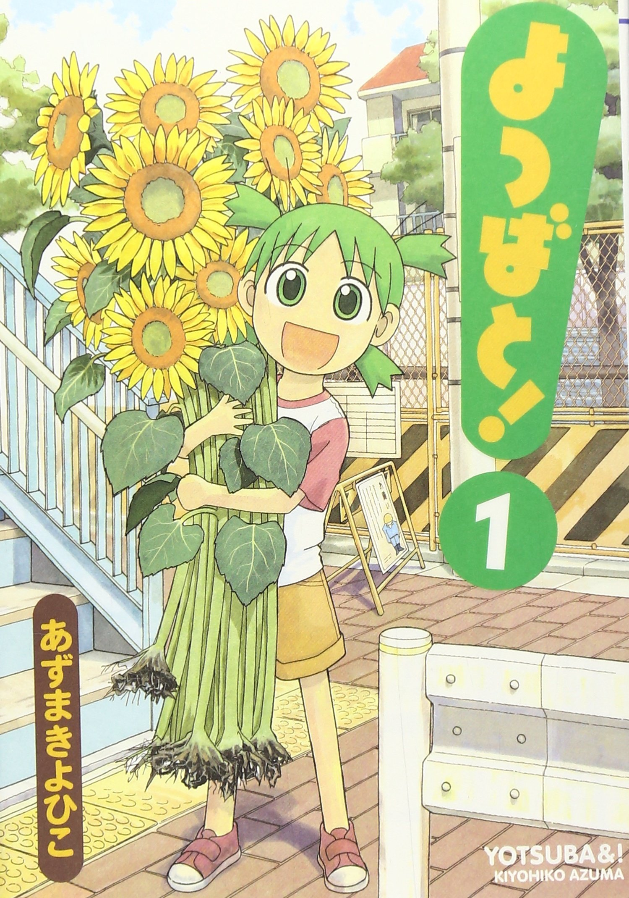

いつでも今日が、いちばん楽しい日。
5歳の女の子、小岩井よつばと『とーちゃん』こと小岩井葉介の二人はとある町に引っ越してきた。
海に行ったり、虫取りをしたり、隣家の三姉妹の家に遊びに行ったり
ちょっと変わった段ボールのロボットを作ったり・・・
ほのぼの系なのに面白い！夏休みの日常コメディ！
私的おすすめ漫画2選！！
いつでも今日が、いちばん楽しい日。
5歳の女の子、小岩井よつばと『とーちゃん』こと小岩井葉介の二人はとある町に引っ越してきた。
海に行ったり、虫取りをしたり、隣家の三姉妹の家に遊びに行ったり
ちょっと変わった段ボールのロボットを作ったり・・・
ほのぼの系なのに面白い！夏休みの日常コメディ！
僕の・・・『テガミ』は・・・
7歳の頃、母親と生き別れた少年『ラグ・シーイング』は、郵便物（テガミ）として運ばれる。
道中、モンスターに襲われるが、テガミバチ『ゴーシュ・スエード』に助けられ、彼に憧れを抱く。
それから5年。
『テガミバチ』採用試験に合格したラグは、最高のテガミバチ「ヘッド・ビー」を目指すため
数々の試練を乗り越えながら、配達作業に沸騰する。
不思議な幼女にも注目！笑いあり涙ありの冒険ファンタジー！